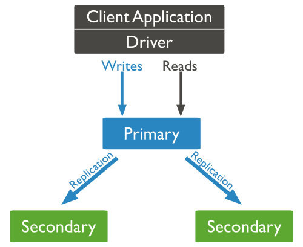
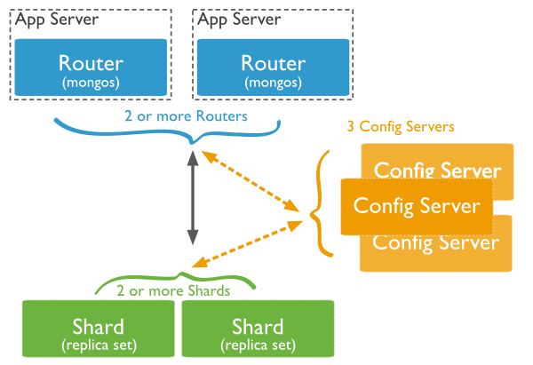
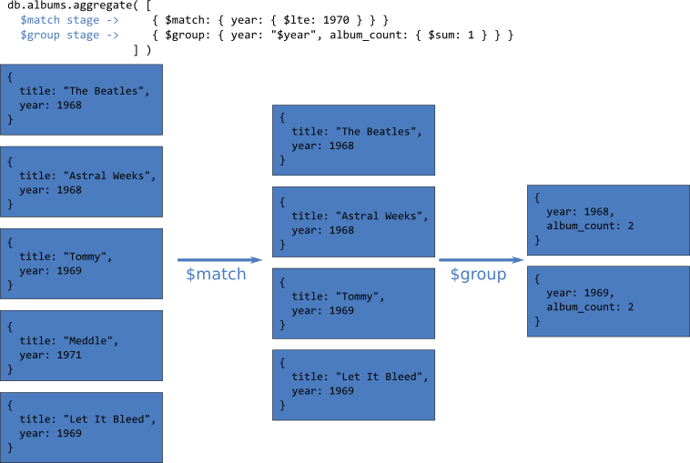

MongoDB
une présentation orientée document
Benoit Luttringer
Table des matières
- Présentation & fonctionnalités
- Dis, c'est quoi un document?
- Les mains dans le cambouis
- Pour aller plus loin
- Concrètement, on fait quoi?
Présentation & Fonctionnalités
Un indice chez vous: énorme
- Je suis une base de données qui stocke des documents
- J'offre de hautes performances
- Je suis capable de répliquer les données
- Je peux partager mes données sur plusieurs machines
- Mon nom vient de l'anglais 'humongous' qui veut dire 'énorme'
Je suis... mongoDB!

Fonctionnalités clés
Stockage de documents
Hautes performances
Haute disponibilité
Haute capacité
Mais...
MongoDB n'offre pas certaines fonctionnalités, contrairement aux bases relationnelles classiques

Les jointures
Adapter le modèle
Les transactions
Mais opérations atomiques sur un seul document
Installation
MongoDB peut être installée sans difficulté particulière sur Linux, OSX, Windows.
MongoDB Enterprise
MongoDB est opensource mais il existe une version Enterprise qui apporte en plus:
- Du support
- Des outils de management
- Monitoring (performance des requêtes par exemple)
- Automatisation de tâches
- Sauvegardes
- Une meilleur intégration des outils de sécurité: LDAP, Kerberos
Dis, c'est quoi un document?
Définition
Un enregistrement MongoDB est un document qui est lui même une structure de données composée de clés / valeurs (format similaire au JSON)
Les valeurs de champs peuvent inclure d'autres documents, des tableaux et des tableaux de documents.
Un ensemble de documents est appelé une collection (l'équivalent d'une table en relationnel)
Un exemple
{
"title": "Electric Ladyland",
"release_year": "1968",
"genres": ["blues rock", "acid rock", "psychedelic rock"],
"musicians": [{
"name": "Jimi Hendrix",
"roles": ["lead singer", "guitarist"]
}, {
"name": "Mitch Mitchell",
"roles": ["drums", "percussions"]
}, {
"name": "Noel Redding",
"roles": ["bass guitar", "singer"]
}],
"tracks_list": ...
}
Types
Tous les types classiques (Numérique, chaînes de caractères, dates, timestamps, etc.)
GridFS pour stocker des fichiers de grande taille, GeoJSON pour les données géospatiales
Les mains dans le cambouis
Interagir avec la base

MongoDB Shell
Le shell mongo permet de se connecter à une base MongoDB et d'interagir avec la base et les données qu'elle contient
prompt> mongo <hostname>/<database>
pour se connecter à la base indiquée
MongoDB Shell
Insérer un document dans une collection (qui sera créée si elle n'existe pas)
db.albums.insert(
{
"title": "Led Zeppelin II",
"release_year": "1969",
"genres": ["blues rock", "hard rock"]
}
)
MongoDB Shell
Utiliser la méthode find() pour générer une requête sur une collection
db.albums.find()
Renvoie la liste de tous les albums de la collection
MongoDB Shell
Mettre à jour des données avec la méthode update()
db.albums.update(
{"title": "Led Zeppelin II"},
{
$push: { "genres": "blues"}
}
)
Ajoute un genre à la liste des genres de l'album "Led Zeppelin II"
MongoDB Shell
Supprimer des documents dans une collection avec la méthode remove()
db.albums.remove(
{
"genres": { $in: ["rockabilly"] }
}
)
Supprime tous les albums dont un des genres déclarés est 'rockabilly'
MongoDB Shell
On peut également avec MongoDB shell
- Réaliser des aggrégations de données
- Gérer les index
- Administrer la base de données
Drivers
Il existe un grand nombre de drivers disponibles pour interagir avec MongoDB depuis une application
- C, C++, C#
- Java, Scala
- Node.js, PHP
- Perl, Python, Ruby
Les requêtes en détail
Une requête se fait via la méthode find()
db.albums.find(
{ "release_year": { $gt: 1960 } },
{ title: 1}
).limit(10)
Elle s'applique sur une collection, en précisant les critères de recherche, les champs à sélectionner ainsi qu'un modificateur de curseur. Chacun de ces éléments est optionnel.
Les requêtes en détail
Le comportement des requêtes est le suivant
- Une requête concerne une seule collection
- Une requête peut être modifiée pour imposer des limites, des sauts, des tris
- L'ordre des documents retournés par une requête est non défini / garanti sauf si on spécifie un tri
- Les opérations de mise à jour utilisent la même syntaxe que les requêtes pour sélectionner les documents à modifier
Les requêtes en détail
Curseurs
L'appel à la méthode find() exécute une requête sur le serveur et retourne un curseur permettant d'itérer sur les résultats.
Les requêtes en détail
Optimisation
Les index permettent d'optimiser les requêtes en évitant à MongoDB de faire des collection scan et en réduisant ainsi le nombre de documents analysés
Plusieurs types d'index sont disponibles:
- Index sur champ unique
- Index composé (sur un ensemble de champs)
- Multikey index: un index sur un champ tableau
- Index géospatial
- Index sur texte: recherche de texte dans les documents
- Hashed index: index utilisé dans le cadre d'une collection partagée (sharded collection)
Les requêtes en détail
MongoDB possède un optimiseur de plan de requêtes qui choisit le plan le plus efficace pour une requête donnée en fonction des index disponibles. Le meilleur plan est alors sauvegardé.
Le plan est révisé lorsque
- la collection subit 1000 écritures
- les index sont modifiés
- la base est redémarrée
Gestion de la concurrence
MongoDB permet à plusieurs clients d'interagir avec les données, elle utilise donc des mécanismes particuliers permettant de s'assurer qu'une même donnée n'est pas modifié par plusieurs clients simultanément.
Lock partagé pour les lectures, au niveau collection (pour le moteur MMAPv1)
Lock exclusif pour les écritures, au niveau collection (pour le moteur MMAPv1)
Les locks sont de multiple granularité: global, base, collection
Certaines opérations, comme les lectures / écritures d'une collection lockent la collection mais certaines autres peuvent également locker la base ou bien l'instance complète
Pour aller plus loin
Fonctionnalités avancées
Réplication
Redondance
Eviter la perte de données
Disponibilité
Prévenir les pannes
Mais également
Augmenter la capacité de lecture, localiser les données dans plusieurs datacenter, rapprocher les données des utilisateurs
Mise en place
Groupe de réplicats = ensemble de process mongod gérant le même ensemble de données
un primaire, des secondaires
Mise en place
Fail over automatique
Si le noeud primaire tombe, un noeud secondaire est automatiquemnt promu
Opérations de lecture
Par défaut, les clients lisent les données sur le noeud primaire
Il est possible de lire sur les noeuds secondaires, mais - asynchronisme oblige - la fraîcheur des données n'est pas forcément optimale
Sharding
But = augmenter la capacité de la base en distribuant les données
Scaling horizontal
Architecture
Partitionnement des données
Clé de partitionnement = un champ (ou un groupe de champ) indexé
Le partitionnement est fait automatiquement
Egalement lors de l'ajout / suppression d'un shard à chaud
Aggregation
Proposer un ensemble d'outils permettant d'analyser et de réaliser des opérations sur des ensembles de données
Aggregation pipelines
Un pipeline d'aggrégation:
- agit sur une collection
- est composé de plusieurs étapes de type
- sélection ($match, $skip)
- formatage ($project, $unwind)
- tri ($sort)
- jointure! (depuis la version 3.2: $lookup)
Aggregation pipelines
Partitionnement des données
Clé de partitionnement = un champ (ou un groupe de champ) indexé
Le partitionnement est fait automatiquement
Egalement lors de l'ajout / suppression d'un shard à chaud
Concrètement on fait quoi?
L'heure du choix
Quelques contraintes / axes de réflexion
Contrainte de modélisation
- Modélisation documentaire
- Pas de jointure
- Dénormalisation souvent nécessaire
Une conception orientée application
Le modèle conçu est piloté par les besoins de l'application
Pas forcément adapté à une autre
Avec un SGBDR, on capte l'essence des données, on modélise un domaine
Avec MongoDB, on cherche le meilleur moyen d'organiser nos données pour répondre au mieux aux besoins applicatifs
Critères de choix de MongoDB
Besoin de scalabilité
Un modèle susceptible d'évoluer
Dans certaines limites
Un modèle documentaire
Gestion d'objets relativement simples (documents, factures, articles, géospatial)
Pas de liens complexes entre plusieurs objets, domaine de prédilection des SGBDR
Un environnement javascript

Simplicité d'utilisation
Un "bonus"
Merci!
Questions?